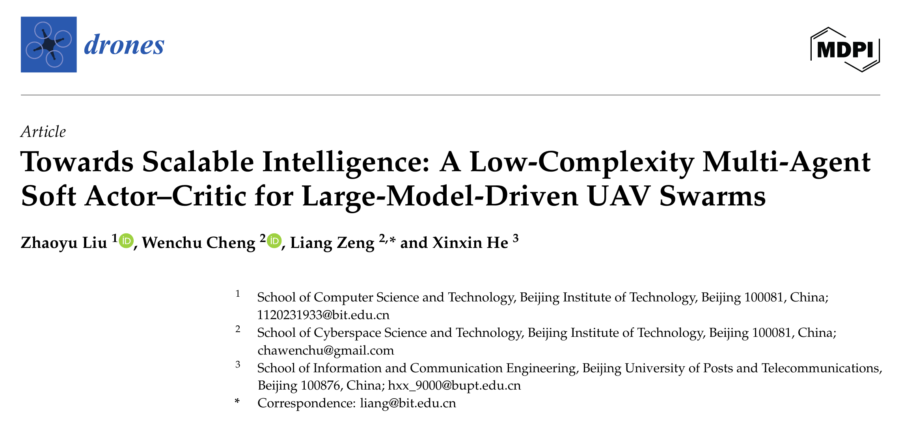
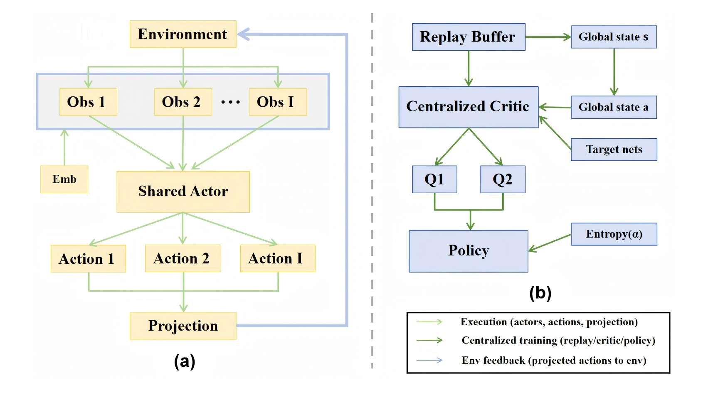
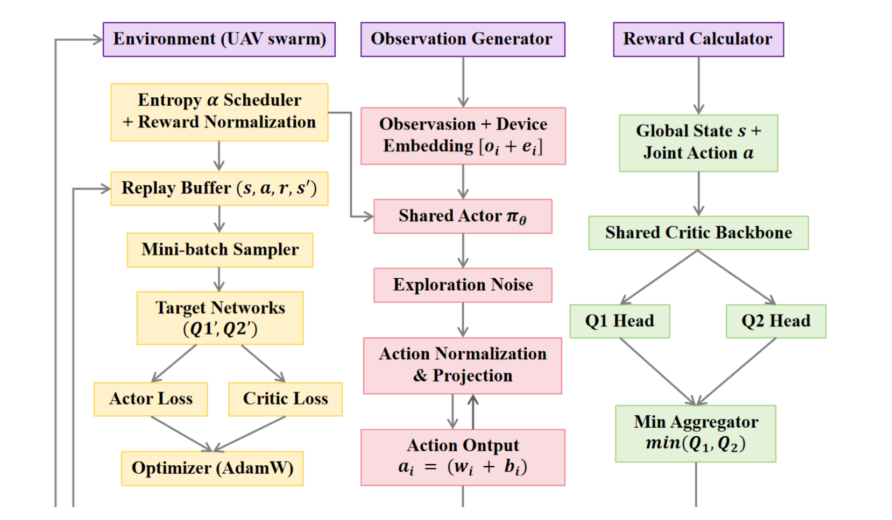
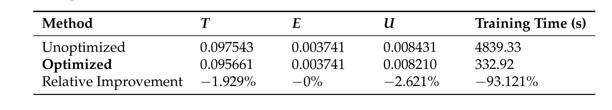
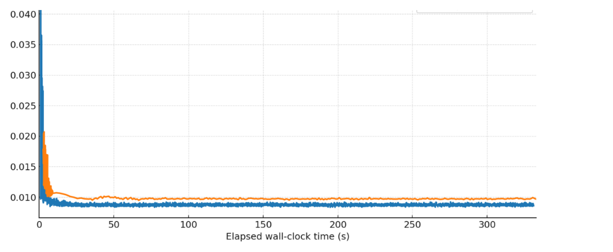
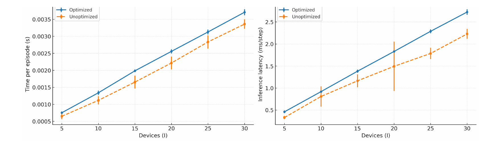
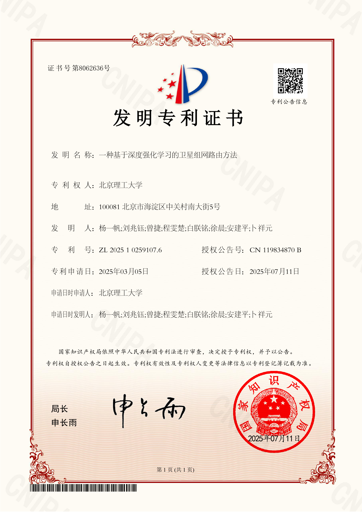
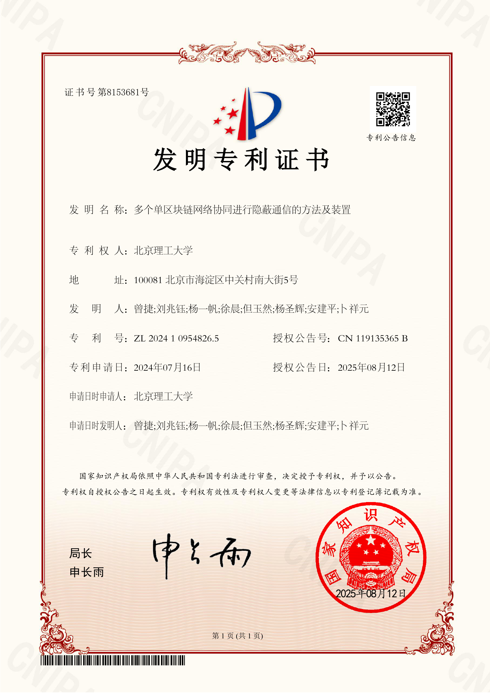
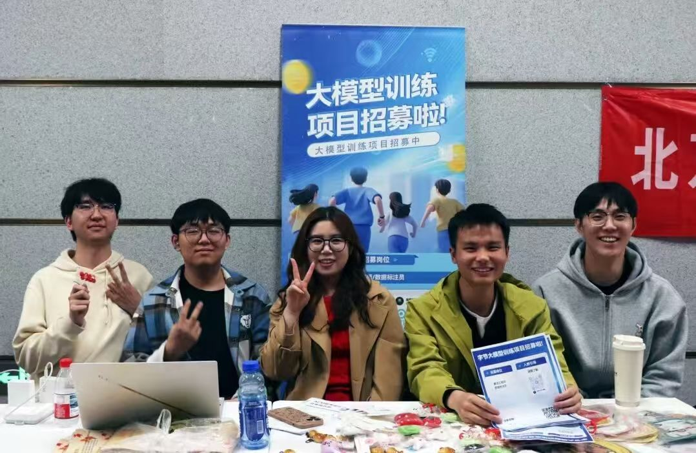

本科生 / 中共预备党员
刘兆钰
北京理工大学睿信书院 · 计算机科学与技术
以多智能体强化学习、通信网络与大模型数据训练为主要实践方向。
SCI一作论文
2一作发明专利
100h+志愿服务
北京理工大学睿信书院 · 计算机科学与技术
以多智能体强化学习、通信网络与大模型数据训练为主要实践方向。

展示标题、作者顺序、期刊与 DOI，用于证明一作发表事实。

共享 Actor、中心化 Critic、Replay Buffer 与目标网络构成优化闭环。

参数共享、结构轻量化和训练鲁棒机制共同降低复杂度。


优化模型在相同时间窗口内更快进入稳定区间。



项目沟通与任务协同记录

线下项目宣讲与组织现场
中共预备党员，参与支部活动、志愿服务与校级活动，完成支部日常任务与公共事务配合。
参与新闻宣传、稿件采写、新媒体运营、会务组织与数据维护。
在志愿服务、活动组织、现场执行和沟通协调中形成稳定的公共服务经验。
电话：15666121085 · 邮箱：15666121085@163.com
期待在复杂技术任务中持续贡献稳定、可验证的执行能力。